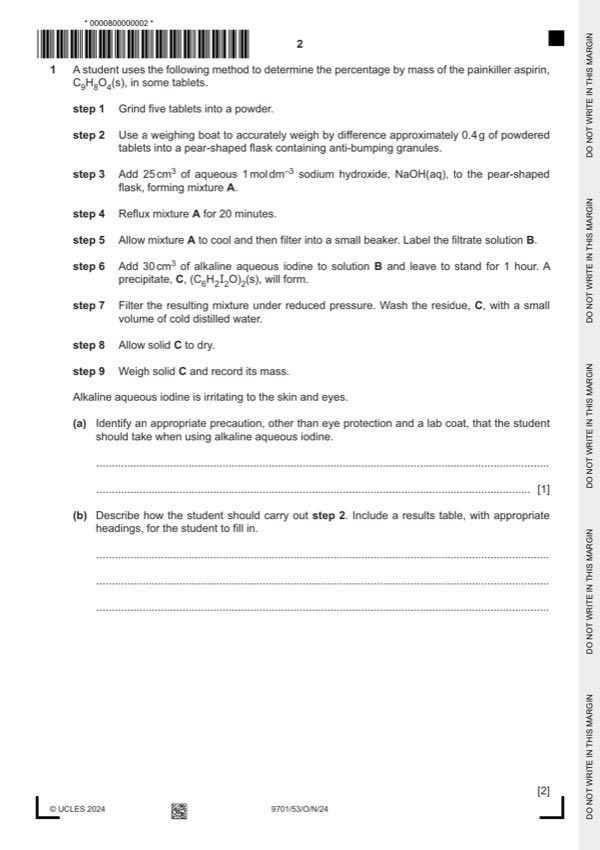

Question 1

Original paper page 2
Part 1(a) — solution
wear chemically resistant gloves. 1
Mark points
- Include the ideas shown in the solution above.
Part 1(b) — solution
- [M1] Includes the following steps. Measure the mass of.. 2
Mark points
- [M1] Includes the following steps. Measure the mass of.. 2
Part 1(c) — solution
- [M1] Correctly placed vertical condenser including jacket. 2
- [M2] (Cold) water in at bottom and water out at the top of the condenser
Mark points
- [M1] Correctly placed vertical condenser including jacket. 2
- [M2] (Cold) water in at bottom and water out at the top of the condenser
Part 1(d)(i) — solution
(alkaline aqueous) iodine is in excess. 1
Mark points
- Include the ideas shown in the solution above.
Part 1(d)(ii) — solution
to ensure the reaction is complete. 1
University Press & Assessment 2024 Page 4 of 7
9701/53 Cambridge International AS & A Level – Mark Scheme October/November 2024
Mark points
- Include the ideas shown in the solution above.
Part 1(d)(iii) — solution
- (aqueous alkaline) iodine
- Sodium hydroxide
- Solution B
- Sodium hydrogencarbonate
- Sodium iodide
- C7H5O3- Na+
- C2H3O2- Na+
- Water washable impurities
Mark points
- (aqueous alkaline) iodine
- Sodium hydroxide
- Solution B
- Sodium hydrogencarbonate
- Sodium iodide
- C7H5O3- Na+
- C2H3O2- Na+
- Water washable impurities
Part 1(d)(iv) — solution
The residue is less soluble in cold water. 1
Mark points
- Include the ideas shown in the solution above.
Part 1(e)(i) — solution
- amount of (C6H2I2O)2 = 0.764 / 687.6 = 1.111 10-3 mol 1
Mark points
- amount of (C6H2I2O)2 = 0.764 / 687.6 = 1.111 10-3 mol 1
Part 1(e)(ii) — solution
- amount of C9H8O4 = 2 x 1(e)(i) (=2.222 10-3) 1
- mass of aspirin = 2 1(e)(i) 180 (= 0.400 g)
Mark points
- amount of C9H8O4 = 2 x 1(e)(i) (=2.222 10-3) 1
- mass of aspirin = 2 1(e)(i) 180 (= 0.400 g)
Part 1(e)(iii) — solution
- percentage aspirin by mass = (1(e)(ii) / 0.409) 100 (= 97.8%) 1
Mark points
- percentage aspirin by mass = (1(e)(ii) / 0.409) 100 (= 97.8%) 1
Part 1(f) — solution
Answer: AND
amount / mass of solid C would be greater (than the true value) 1
AND
calculated percentage by mass would be greater than (e)(iii)
Mark points
- Correct result: AND